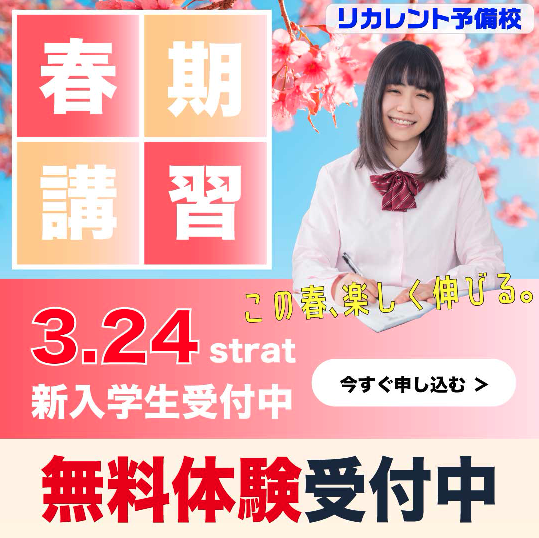

春季講習の無料体験申込み促進を目的に、中高生と保護者へ向けたWebバナーを制作しました。

春から新しい学習環境を検討している中高生と保護者をターゲットに設定し、 桜の写真や明るい配色を使用することで、 前向きで希望のある印象になるよう意識しました。
また、学生モデルの写真を使用することで、 実際の利用イメージを想像しやすくし、 親近感が伝わるデザインを目指しました。
「春期講習」の文字を大きく配置し、 一目で内容が伝わるようにしました。 また、「新入学生受付中」「今すぐ申し込む」「無料体験受付中」など、 重要な情報が目立つようにレイアウトを調整しました。
桜を連想させるピンクをベースカラーに使用し、 春らしさと女性向けのやわらかい印象を表現しました。 全体を明るい雰囲気にまとめることで、 学生や保護者に親しみやすく見えるよう調整しています。
現在なら、情報量をさらに整理し、 ユーザーの視線が自然に誘導されるレイアウトへ改善したいと考えています。 また、CTAボタンのデザインや配置を見直し、 無料体験への申込みにつながりやすい構成にしたいです。
配色や文字サイズについても再検討し、 重要な情報がより短時間で伝わるバナーを目指したいです。
ターゲットに合わせた配色や写真選びによって、 デザイン全体の印象が大きく変わることを学びました。 また、バナー広告では限られたスペースの中で情報の優先順位を整理し、 短時間で内容を伝えることが重要であると実感しました。